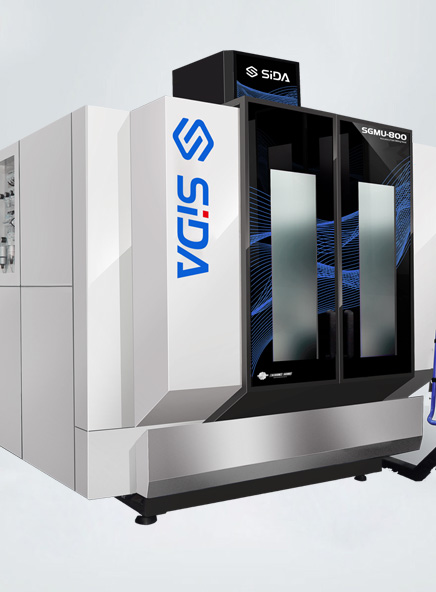
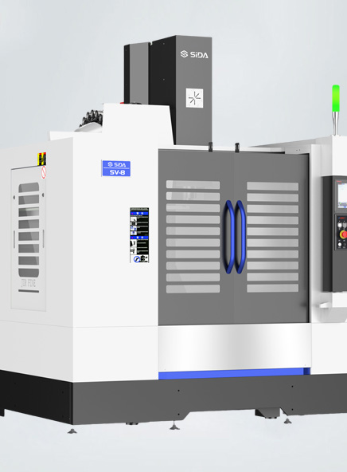
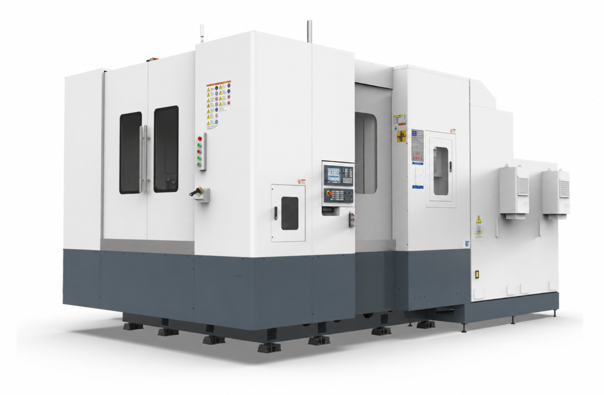
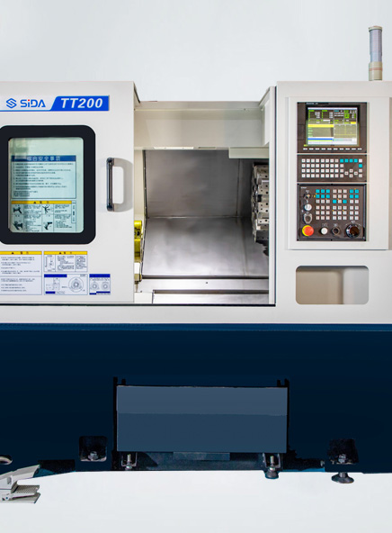
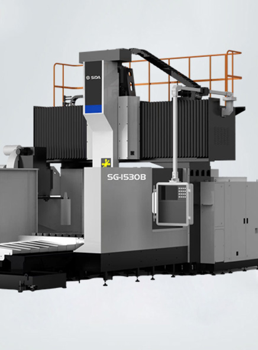
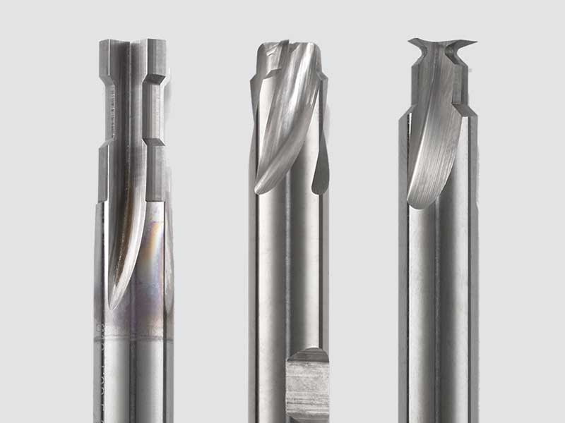
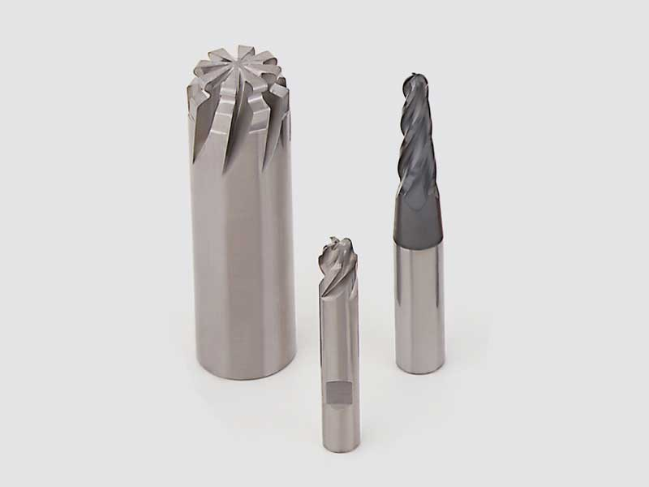

Каталог SIDA
Восемь направлений
для производственных задач
Выберите тип оборудования или специального инструмента, чтобы посмотреть назначение и возможности поставки.

01
Пятиосевые обрабатывающие центры
Сложные пространственные детали за меньшее число установов.
Подробнее
02
Вертикально-фрезерные обрабатывающие центры
Универсальная база для фрезерования, сверления и нарезания резьбы.
Подробнее
03
Горизонтально-фрезерные обрабатывающие центры
Для серийного производства и обработки тяжёлых корпусных деталей.
Подробнее
04
Токарные обрабатывающие центры
Изготовление деталей вращения с фрезерными операциями.
Подробнее
05
Портальные обрабатывающие центры
Обработка крупногабаритных и тяжёлых заготовок.
Подробнее
06
Вертикальные токарно-карусельные станки
Жёсткая обработка тяжёлых крупногабаритных деталей и дисков.
Подробнее07
Шлифовальные станки с ЧПУ
Круглое, внутреннее и плоское шлифование с высокой точностью.
Подробнее

08
Специальный режущий инструмент
Проектирование, изготовление и восстановление инструмента под технологию.
Подробнее